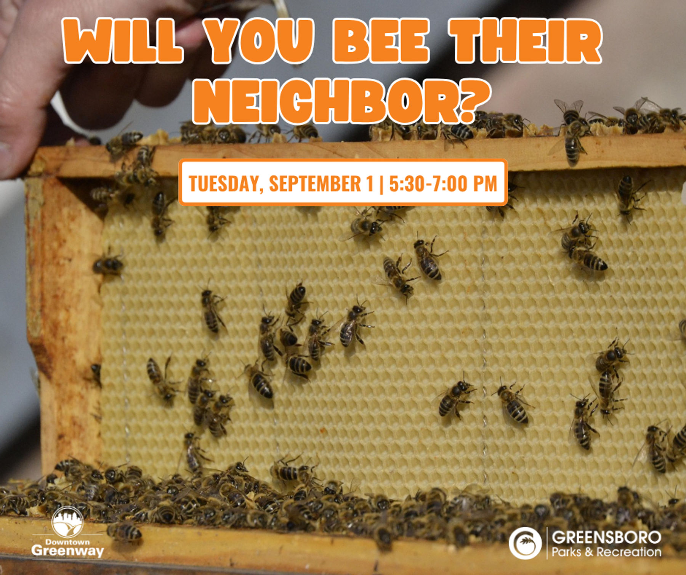

Event Overview
Interested in learning about beekeeping and the importance of bees in our ecosystem? Join us for a special event that will give you an up close look at the fascinating world of bees. This event is perfect for families, nature enthusiasts, and anyone curious about the vital role bees play in our environment. View the testimonial below from a previous attendee to see what you can gain from this event.
"The event provided me with valuable insight into how essential bees are in our ecosystem."
Featured Activities
- Learning about the life of bees
- Information on building and maintaining a pollinator garden
- Tips on protecting bees
- Learning how hives work
- Meeting actual beekeepers
Attendee Tips
- The event will be held at the Downtown Greenway on Tuesday, September 1st, 2026, from 5:30 to 7:00 PM at the Pollinator Garden in Woven Works Park.
- Street parking will be available at 401 Cumberland St.
- Bring your camera to capture the beauty of the bees and their hives.
- There will be no public restrooms at the location, prepare accordingly.
- Be respectful of the bees and their environment.